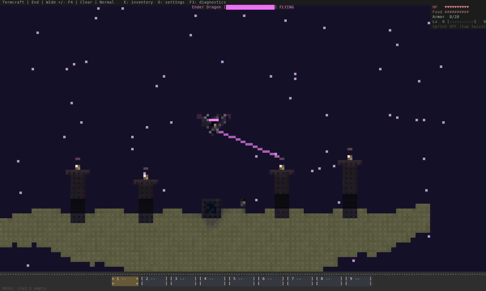
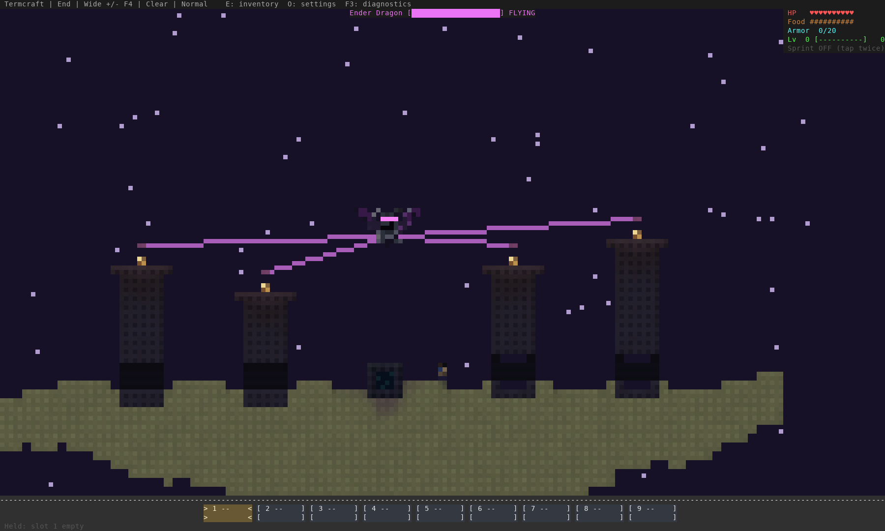

Actual game renderer. Fixed-position invulnerable player for simulated flight; no human boss fight or smoothness claim. See the companion README for reproduction details and limits.
Engine-driven flight — 40 seconds, sampled at 2.5 fps

Generated arena before

Generated arena nowFrontal art before — staged pose